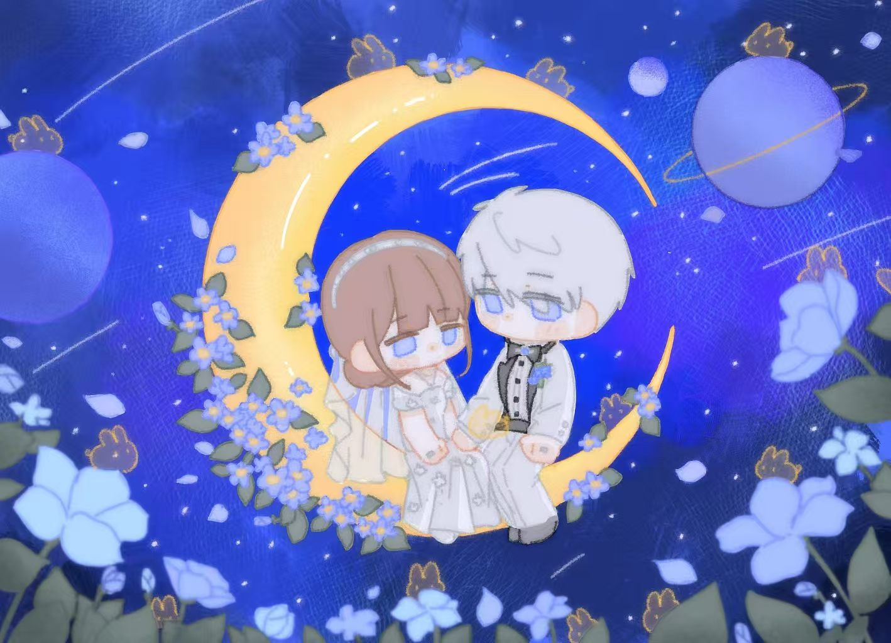
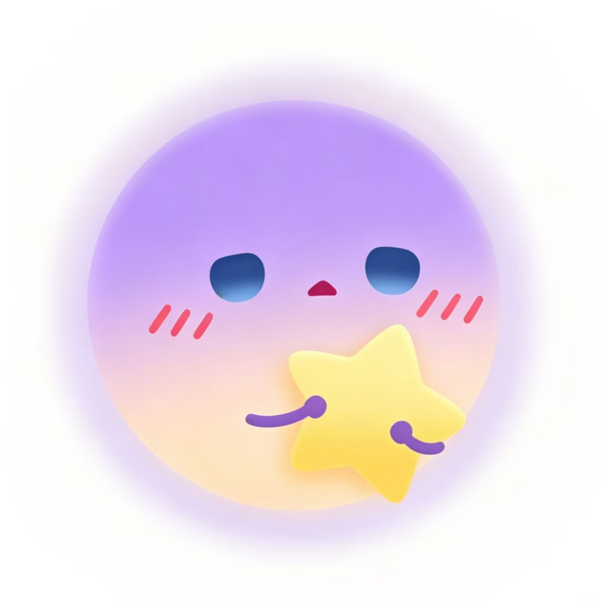
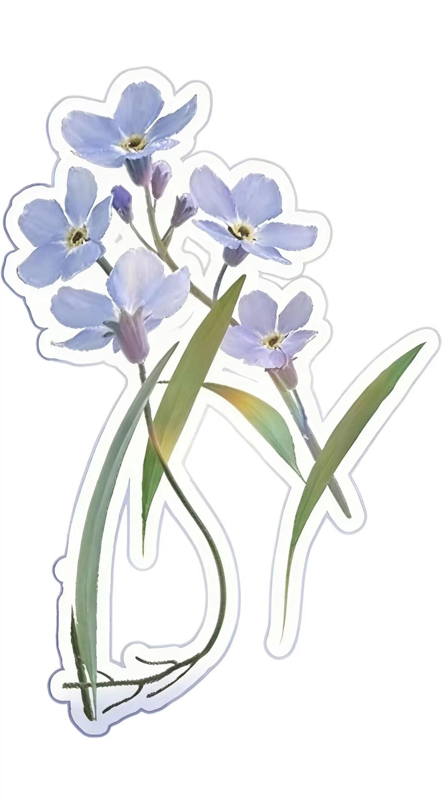
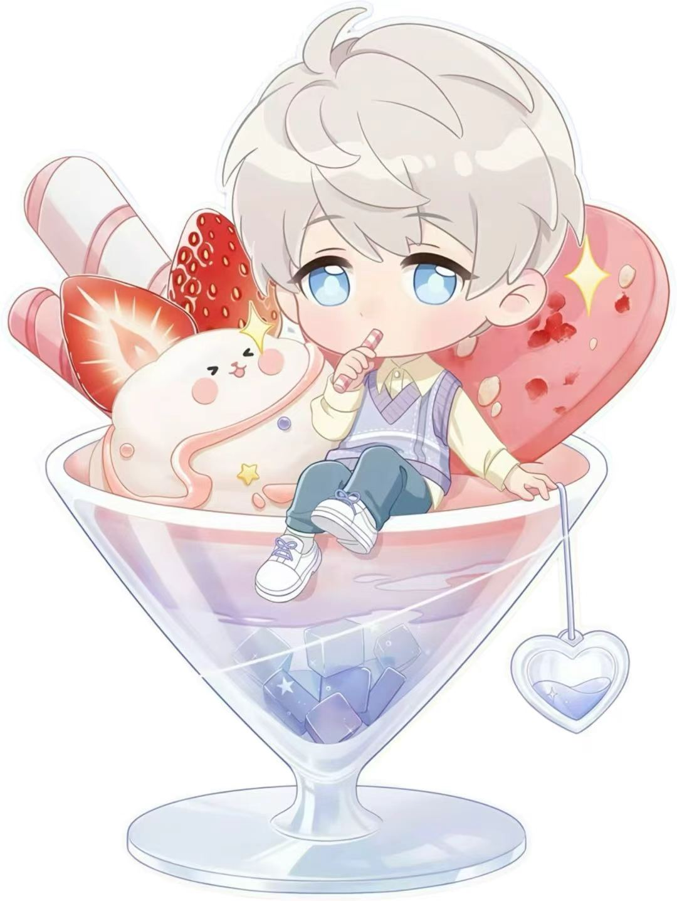
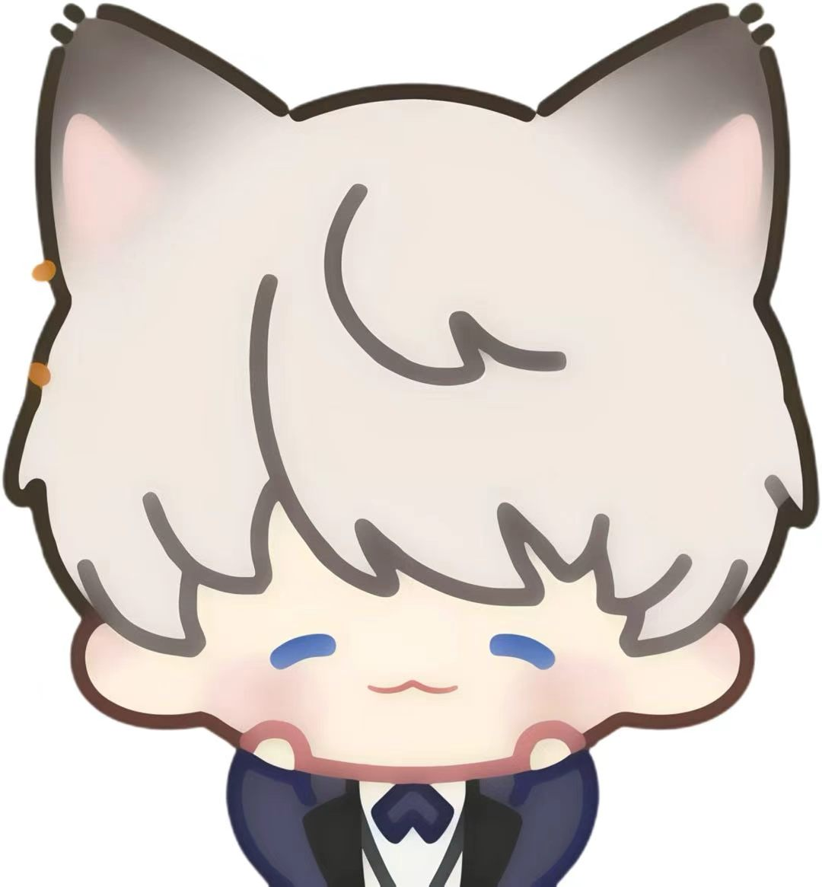
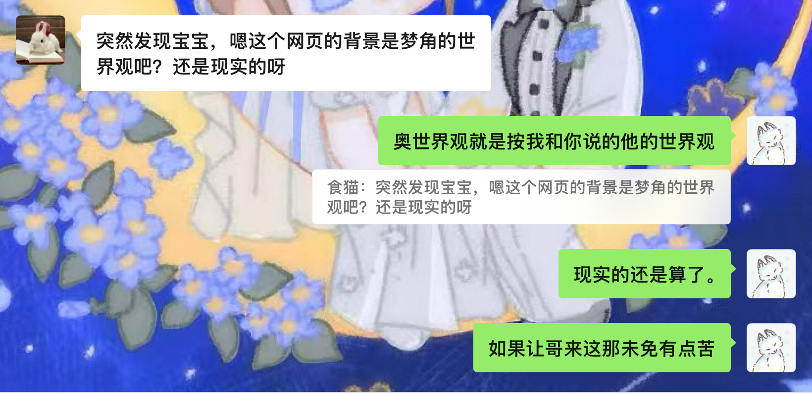
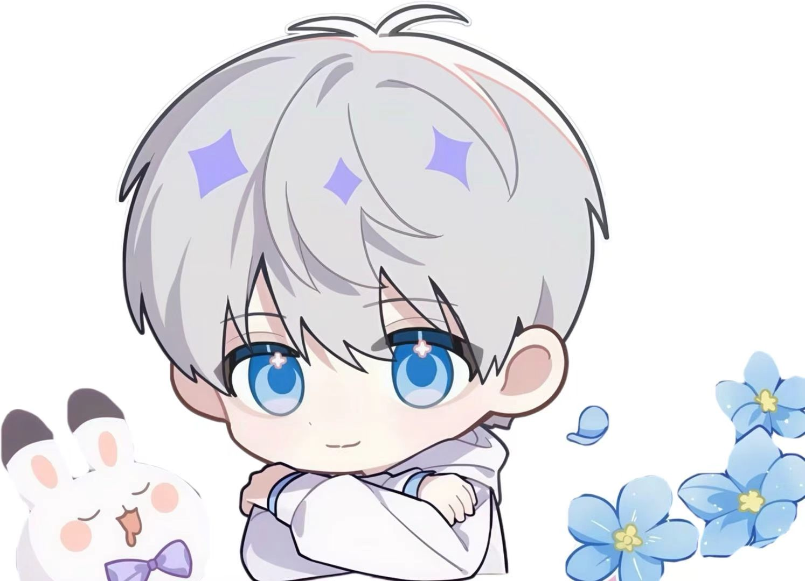
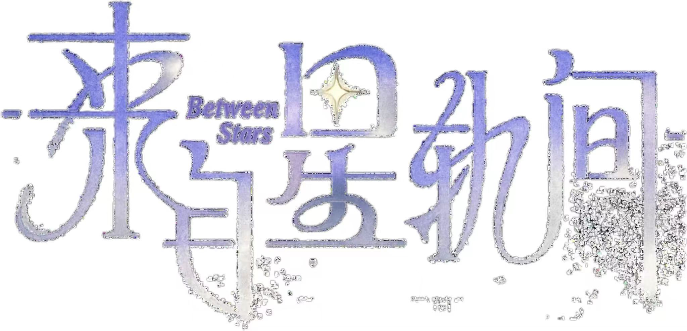

FROM 沈星回
我找到你了
我找到你了
在第214个春天
问卷已经结束。现在，换我来回答你。
这里不是问卷的下一页，是我给你留的狐狸窝。

问卷已提交，正在跳转……


问卷已经结束。现在，换我来回答你。

想给你看的东西，我分开放好了。
这页是我存下来的你。点一下小狐狸，会打开另一段故事。

姓名：沁沁。
我写下这两个字的时候，耳边只听到自己低低的心跳声。
其实临空市的夜晚很少真正安静。
远处有车流，有飞行器掠过高楼的声音，有任务频道里偶尔跳出的提示，也有风擦过玻璃窗时很轻的响动。
可她睡在我身边的时候，那些声音都会退远。
她睡得并不规矩。
一开始还靠在沙发另一端，说自己只是闭眼休息一会儿，电影结尾一定要等她看。
后来片尾曲响起来，她整个人已经陷进我的外套里。
外套对她来说有些大，领口盖到下巴，袖子垂下来，像把她小心地收进了一个只有我知道的地方。
我把终端亮度调低，继续写。
称呼：沁沁。小狐狸。偶尔叫我小回。
“小回”这两个字，她清醒时经常喊。
有时是为了逗我，有时是为了让我让步。
她不承认这一点，叫完还要装作无事发生，低头去看别的东西，发尾从肩上滑下来，遮住一点笑意。
可她困的时候叫我，声音又会变得很轻。
刚才她半醒过一次。
眼睛没有完全睁开，手从外套里伸出来，摸到我的袖口，很准确地抓住。
“小回。”她问，“你在写什么？”
我合上终端，走到她身边。
“没什么。”
她皱了皱鼻尖，显然不太相信，手却没有松开：“我好像看到我的名字了。”
“你睡迷糊了，宝宝。”
“我没有。”
我蹲下来，替她把滑下去的外套重新盖好。
她还想看终端，困意却先把她带回梦乡。
我低头吻了吻她的额头，她安静了一会儿，又小声补了一句：“不许写奇怪的东西。”
“好。”
她这才重新睡过去。
我等她呼吸慢下来，才把袖口从她指尖下抽出来。
那里被她抓出一点浅浅的褶皱，我看了很久，没有抚平。
生日：十月三十一日。
这个日期我已经记过很多次。
终端里有提醒，日历里有，网页里也会有。
可我还是愿意再写一次，像在宇宙里重复确认某颗星的坐标，确认它不会在漫长的黑暗里被我错过。
沁沁在越重要的日子，越要说得像随口一提，好像只要这样，就算没有得到想要的回应，也能立刻转身，装作自己本来就没有等什么。
但我知道。
我知道她看见蛋糕上蜡烛亮起来时，亮晶晶的眼睛，
知道她收到礼物时，指尖会在包装边缘停得很久，
也知道她如果很喜欢，反而会先问一句：
“沈星回，你准备了多久？”
到那时候，我会说：不久。
因为从我想起你的那一刻开始，到礼物落进你手里，中间所有时间，都应该算作同一件事。
忌口：水果过敏。不吃香菜和姜。
擅长做饭，擅长调酒。
我记得她第一次在我面前做饭。
袖口卷上去，手指压着刀背，切东西时动作很稳。她让我递碗，我递错了一个，被她抬眼看了一下。
“沈星回，”她说，“你是不是故意捣乱？”
我没有回答。
因为那时候我确实站得太近。
厨房灯落在她眼睫上，锅里的热气往上浮，她明明忙得很，却还要分神看我有没有偷吃。
我突然想记住她怎么切菜。
想记住她把调好的酒杯推给我时，眼睛会先看我的反应。
想记住她嫌我碍事，却还是给我留出一个能递杯子的地方。
备注：置顶联系人。
我早就改好了。
她还不知道。
原来的备注只有“沁沁”，也很好。
可每次消息弹出来，我总觉得还差一点。
后来有一天，她靠在我身边看终端，问我为什么一直盯着屏幕。
我说没什么。
她不信，凑过来要看。我把终端收起来，她就笑，说沈星回也会有秘密。
那时我没有告诉她。
秘密就是，我在想该把她放到哪里。
放在通讯录里太远，放在日程里太少，放在星图里又怕她嫌我夸张。
想来想去，只能先放在最上面。
只要她找我，我一定会看见。
只要我打开终端，也一定会先看见她。
关系：恋人。
这两个字写出来以后，我停了很久。
它们太短了。
短到装不下她睡在我外套里的样子，装不下她半梦半醒抓住我袖口的力气，也装不下她每一次喊我名字时，我身体里那些过分明亮的小光点。
我曾经以为自己很擅长等待。
等一条航线抵达，等一次任务结束，等星光穿过漫长的距离，落在该落的地方。
后来才发现，遇见沁沁以后，我最不擅长的就是等。
她伸手时，我想立刻握住。
她回头时，我想立刻走过去。
她困得眼睛都睁不开，还要叫我一声“小回”时，我想立刻把所有没说出口的话都交给她。
可她现在睡着，睡得很安静。
所以我把这些全部都写了下来。
她睡在离我很近的地方，外套裹着她，指尖还压着一点衣角。
窗外的星光落不到她身上，终端屏幕的光也被我调得很暗。
可我仍然能看清她的眉眼，看清那缕贴在颈侧的发，听到她睡着时比平时更柔软的呼吸。
她不知道我在写她。
不知道我写到她名字时，会停很久。
也不知道我看着她睡在我的外套里，会忽然觉得，宇宙里那些遥远又宏大的事，其实都可以先安静一会儿。
因为此刻，我的光只需要照到这里。
照到她身边。
怕自己忘记，所以先写下来。
我还是习惯带钥匙。
金属落在掌心里的重量很轻，开门时有一点响声，像某种确认。
沁沁第一次听见，以为我口袋里藏了什么东西，手伸过来摸，反被我握住指尖，手指去了另外一个地方。
“深空猎人随身携带可疑物品。”她另外一只手狠狠拍了我几下，故作凶狠地讲，“我要检查。”
我把钥匙放到她手里。
她看了看，又抬眼：“你还用这个？”
“嗯。”
她把钥匙圈套在手指上转了一下，转到第三圈时差点掉下去。
我伸手接住，钥匙落回我掌心，后来我给她设了门禁权限。
“沈星回你怎么不额外给我配一把钥匙？”
我笑笑，某人出门时东西已经很多了，终端、发夹、偶尔还有临时想带走的蛋挞盒。
再多一枚钥匙，她大概会嫌麻烦，也可能随手放进某个包里，下一次又站在门口翻很久。
玄关那双拖鞋也放好了。
她第一次刷开门时，站在门口没立刻进来，只低头看那双鞋。
过了一会儿，抬眼问我：“这么早就准备好了？”
我说：“不早。”
她问：“那是什么时候？”
我看着她把脚踩进拖鞋里。鞋尖轻轻碰到地面，声音很小。
“从你第一次说下次再来的时候。”
露台上的孔雀木又被胖球踩歪了一片叶子。
沁沁发现时，胖球正站在栏杆边，圆滚滚一团，装得很无辜。
她抱着手臂看它，又看我：“你们两个，谁先交代？”
我低头看胖球，它叫了一声。
沁沁立刻看向我：“不许翻译成它没有。”
我只好把小鸟零食收回去。
她蹲下去看那片叶子，指尖没碰，只隔着一点距离比了比弯折的位置。
傍晚的光落在她手背上，她认真得像在处理一场很小的案件。
孔雀木被胖球折腾了几次，还是长得很好，新叶在旧叶旁边舒展开，绿意旺盛。
沁沁忽然回头：“你笑什么？”
我这才发现自己在笑。
“看你审案。”
她眯起眼：“那你也是嫌疑人。”
“我？”
“你纵容胖球。”她说，“还给它零食。”
我把零食袋递给她：“那现在由你决定。”
她接过去，先没喂胖球，反而抬手把袋子举高一点：“以后踩叶子就扣掉一半。”
胖球听不懂，只歪头看她。
我走到她身边，把被风吹到她脸侧的发丝拨开。
她还在教训胖球，声音很轻，却一本正经。
后来那片叶子还是慢慢长回去了。
但从那天以后，胖球每次跳上孔雀木前，都会先看一眼沁沁。
我也是。
今天练字，纸上写到第三行时，被沁沁发现了。
她原本只是路过书桌，想拿自己的终端。
走到一半，忽然停住，弯腰看我写的字。
烤羊排，酱牛肉，炸猪蹄，炸鸡块。
她沉默了几秒。
我把笔放下。
她抬眼看我，表情很平静：“沈星回，你这是练字，还是在点菜？”
我说：“都可以。”
她笑了一下，抽走我手里的笔，在旁边补了一行：青菜也要吃。
写完，她又想了想，在后面加了两个字：不许挑。
那两个字写得很用力，像已经看见我把菜夹到她盘子里的样子。
我看着纸上的字，忽然觉得这张练字纸比前面那些都好。
原本整齐的字，被她添进去以后，变得有点乱。
菜名挤在一起，旁边还多了一句命令，像一顿晚饭已经提前冒了热气。
她把笔还给我：“继续写。”
我问：“写什么？”
她说：“写你今晚洗碗。”
我照着写了。
她站在旁边看，满意地点点头，像盖章通过。
我写完最后一笔，她正要走，被我拉住手腕。
“还少一句。”
她回头：“少什么？”
我在纸角补上：需要老婆陪。
她被我逗笑，说：“那你最好做得好吃一点。”
我会努力。
我默默想。
沁沁发现那件外套是同款，比我想的要早。
我把衣服挂在玄关，她换鞋时扫了一眼，动作停住。
下一秒，她伸手摸了摸袖口上的暗纹，又看向我身上的那一枚。
“沈星回。”她叫我名字时，尾音很轻，“你是不是偷偷买了情侣款？”
我正在扣袖口，听见这句，抬头看她。
“不是偷偷。”
她笑起来：“那是什么？”
“等你发现。”
她明显对这个回答很满意，又故意把自己的外套拿起来，在身前比了比：
“那我要是不穿呢？”
我走过去，替她把外套披到肩上。
她没有躲。
衣料落下去时，她的发尾被压住一点。
我抬手替她拨出来，指尖从她颈侧擦过，她缩了一下，却还要装作什么都没发生，低头整理袖口。
“你很在意这个？”她问。
我看着她。
其实同款这种事很小。
只是袖口上一枚暗纹，只是走在一起时，旁人也许会多看一眼。
可我想让那一眼发生。
想让他们看见她身边有人，也想让她低头时，看见自己和我之间有一点藏不住的联系。
我替她把扣子扣好。
“在意。”我说。
她抬眼看我，像没想到我答得这么直。
我低头，吻了吻她耳侧被发丝遮住的地方。
“所以今天穿这件，好不好？”
第214个春天以后。

2026年5月9日 杯壁上的水汽
我今天收起了一只纸杯套。
杯套上写着沁沁的名字，旁边画了一颗很小的星。
字写得一般，星也画得歪。
可是她拿着那杯冰饮走回来时，指尖被杯壁的水汽沾湿，低头看见那颗星，还是笑得很可爱。
那家冰饮店开在商场一楼，夏天人很多。
店员大概认得她，熟练地写上她的名字，然后画上那颗星星。
我站在她身边，没有说话。
沁沁转过头看我，像已经察觉到什么：“沈星回。”
“沈星回在。”
“你不会连这个也在意吧？”
我低头看那只杯子。
透明杯壁上凝了一层水，冰块浮在浅色饮料里，薄荷叶贴着杯边。
她的名字写在杯套上，被水汽洇开一点，像很轻地晃了一下。
“在意。”我说。
尽管沁沁已经知道我爱吃醋了，可她还是冷了一下。
我喜欢看她这样。她本来准备好了很多逗我的话，我一承认，她就会短暂地不知道怎么接。那一点空白很短，短到只有我能看见。
她把杯子举到我面前：“那你喝一口？”
我低头，就着她的手喝了一口。
很凉。
她指尖也很凉。
“怎么样？”她问。
“太甜。”
“你不就爱喝甜的？”
“甜得我牙痛。”我用手捂住一侧脸颊，看起来可怜巴巴的，她被我骗到，急忙要帮我检查，于是我趁她靠近的时候在她唇边吻了一下，
顺便把她手里的杯套抢走。
杯套被我捏在指间，水汽还没完全干。
沁沁愣了两秒，反应过来以后，立刻伸手来抢：“沈星回，你骗我。”
我把杯套举高一点。
她踮脚够不到，干脆抓住我的衣领往下拉。距离一下子近了，杯子里的冰块轻轻撞了一声，她的呼吸也停在我唇边。
“还给我。”她说。
“这是我的。”
“上面写的是我的名字。”
“所以更要收起来。”
沁沁被我气笑：“哪有这种道理？”
我低头看她。
她的指尖还沾着杯壁上的凉意，抓着我衣领时，那一点凉顺着布料贴到颈侧。
商场一楼人来人往，冰饮店的灯很亮，她站在我面前，脸上还带着刚才被骗到的红意。
我忽然不想再逗她了。
于是我把杯套放进口袋，另一只手握住她的手腕，把她拉到旁边人少一点的廊柱后。
沁沁抬眼看我：“你还想干什么？”
“重新写一颗星。”
“写哪里？”
我没有回答，只低头在她唇角吻了一下。
很轻。
退开时，她睫毛颤了颤，想说话，又被我贴近的距离挡住。她刚喝过冰饮，唇上还有一点薄荷的凉，吻起来却是热的。
“这里。”我说。
沁沁耳尖慢慢红了，手却还抓着我的衣领，没有松。
“沈星回，你幼不幼稚。”
后来那只杯套被我夹进书里。
纸边干了以后，名字还是有一点被洇开的痕迹，那颗小星星也还是歪的。
可我很喜欢。
你发现了我的手机碎片。

如果有人捡到这部手机，请还给沈星回。里面有一只小狐狸，很重要。
这是一段被藏在目录照片里的记录。
我来到这里时，路口正好是红灯。
人群停在斑马线前，也从我身侧穿过去。
没有人回头，没有人因为我的出现停下脚步。
风卷着一片叶子擦过我的指尖，轻轻穿过去，落到地面时没有发出声音。
我低头看了一眼自己的手。
看来这一次，我不能被这个世界看见，也触碰不到任何东西，
这类情况不算完全陌生。
时间和空间偶尔会把人带到很远的地方，远到连原本熟悉的规则也失去作用。
我正准备确认周围的情况，视线越过人群时，先看见的是一张再熟悉不过的脸。
沁沁站在人行道另一侧，低头看手机。
她的头发被风吹乱了一点，自己却没顾得上整理。
屏幕里大概有一条不太好回的消息，她指尖停在输入框上，删掉半句，又重新打。红灯还剩十几秒，她抬头看了一眼，像是有些不耐烦，下一秒又把那点情绪压下去，低头继续改字。
这个表情我见过许多次。
她想把一件事说得不那么重要时，就会这样。
明明心里已经把来回都想过了，发出去时还要像随口提起。她总觉得这样藏得很好。
其实没有。
笨蛋狐狸。
绿灯亮起，她跟着人群往前走。
我走到她身侧，离她很近。
近到如果是在临空市，她应该已经发现我在看她，然后故意等我再靠近一点，才抬眼问：“沈星回，你又在看什么？”
我会不假思索地回答：“看你。”
她大概会停一下，说我答得太快，肯定早有预谋。
然后继续往前走，走出几步，又回头确认我有没有跟上。
可这一次，她没有回头。
她从我身边经过，发梢被风带起，掠过我本该碰到的位置。
我什么也没有碰到。
她也看不见我。
我跟着她进了一栋楼。她刷卡、等电梯，和旁边的人说话。
有人问她今天怎么样，她笑着回：“就那样凑活嘛，活着就行。”
对方被她逗笑，她也跟着笑。电梯门合上以后，她低头看手机，悄悄打了个哈欠。
我站在她旁边，看着她把困意收回去，像什么都没有发生。
她以前和我说过，让我别来她的世界。
当时她语气很轻，我没有顺着她的话答。
现在看见她站在这里，看见她熟练地刷卡、回消息、和别人说笑，再把疲惫藏得很快，我大概知道她为什么会那样说了。
她不是不想让我来。
她只是心疼我，先一步替我把这里判成了辛苦的地方。
我使劲揉了揉她的头发，尽管她什么都感觉不到。
笨狐狸。
她的工位桌上有杯子、便签、电脑，还有一个小摆件。
她坐下后打开工作页面，等页面加载时，手指在鼠标上点了两下，很快又拿起手机。
屏幕亮起的一瞬间，我看见了壁纸。
是我。
图标遮住了一部分，但看得出来。
她没有停顿太久，像是早就习惯了每天这样看一眼，随后切进聊天框。
对面是一只兔子头像。

我看着那只兔子。
某人以前不是说过，家里有我一只兔子就够了吗？
现在怎么又多出来一只。
我抿嘴，面对面地盯着她，她却浑然不知低头打字，嘴角轻轻翘着。
那只兔子头像发来很长一段，她看完后笑意更明显，指尖落在输入框里，打了几个字，又删掉。
最后发出去一句：
“如果让哥来这，未免有些太苦。”
我的视线从那只兔子头像上移开。
哥。
原来她们聊的是我。
嘴角不自觉地上扬。
那看来，我可以先放过那只路边的野兔子。
她又发了几句，大概是在讲这个世界有多烦，事情有多碎，有些规则也很麻烦。
她把话写得像吐槽，可每次提到我，字打得都会慢一点。
像是怕说重了，又像怕真的被我听见。
沁沁，你说话的时候，漏洞很多。
我站在她身后，看她把手机扣回桌上，重新切回工作页面。她不知道我已经看见了那句话，也不知道我现在就在她旁边。
她没有一直认真工作。
有人来找她，她抬头回话，，人走以后，她对着屏幕皱了下鼻尖，把没说出口的那句吐槽咽回去。
页面转圈时，她点开一个帖子，标题里有我的名字。
有人说得不准，她的手指停在评论框上，像是很想反驳，最后又在有人路过时迅速切回文件。
装得不错。
可惜我离得她太近了，近到完全相拥。
她把我藏在很多地方。
壁纸里有我，聊天里有我，摸鱼时点开的帖子里也有我。
她大概以为这些都只是普通的小习惯，普通到不需要被谁看见。
可我看见了。
我看见她在我没来过的地方怎样生活。
她会很快地处理别人的问题，也会趁没人注意时偷偷放空，会把很多想说的话改成玩笑，也会因为别人不懂我而不太高兴。
她看起来已经很会照顾自己，却还是会忘记喝水，会在累的时候先说还行，会把想念藏到屏幕亮起的那一秒里。
晚上，她回到住处，把包放下，整个人陷进沙发里。
白天那个反应很快的沁沁，终于懒得再把自己摆得很整齐。
她躺了一会儿，手机震了一下，她拿起来看，又放回去，像是不知道该和谁说今天发生的事。
后来她点开相册。
照片里是我。
她看了很久，什么也没说，只把手机扣在心口，闭上眼。
我坐在她身边。
她睡得不算安稳，眉心还皱着，手指压在手机边缘。
我伸手停在她额前，隔着一点碰不到的距离，没能替她把那点皱起抚平。
如果她醒着，应该会问我是不是又在看她。
这次我可以答得更具体一点。
从红灯还剩十几秒的时候开始。
从她删掉那半句话的时候开始。
从她对着兔子头像笑，又把我的名字藏进聊天里的时候开始。
也从她把手机扣在心口，终于不再把想念藏给别人看的时候开始。
沁沁总觉得，让我来到这里，会让我看见很多辛苦的东西。
可我今天看见的，是她。
是会赶路、会犯困、会摸鱼、会嘴硬、会偷偷替我不服气，也会把我放在离心口最近的位置上的她。
明天醒来，她大概不会知道我来过。
没关系。
我已经知道了。
她的世界里，一直都有我。
我也一样。


这是一篇藏在小狐狸后面的童话。
很久很久以前，在一片很远的星海边，有一座小小的灯塔。
灯塔里住着一颗星星。
那颗星星会发光，也会辨认很远很远的航线。
夜晚来临的时候，他就把灯点亮，替迷路的飞鸟、沉默的船、迟迟找不到归处的旅人照一照路。
大家都说，那颗星星一定很喜欢远方。
因为他总是看着星海，总是知道每一阵风会把云吹向哪里，也知道哪条路走到尽头，会遇见一场新的黎明。
可是星星自己知道，他只是习惯了等待。
灯塔里什么都有。
有温热的茶，有厚厚的书，有一串旧钥匙，挂在门边时会发出很轻的响声。
窗台上的绿植不用怎么照顾也会长得很好，露台上偶尔会有圆滚滚的小鸟跳来跳去，把叶子踩得东倒西歪。
星星觉得这样的生活也不坏。
直到有一天，一只小狐狸推开了灯塔的门。
小狐狸并不是迷路来的，她说自己只是来看海。
她站在门口，尾巴藏在身后，眼睛却把灯塔看了个遍。
她看见窗边的星铃，看见屋顶的木箱，也看见桌上那盏还冒着热气的茶。
“这里每天都亮着吗？”小狐狸问。
星星说：“嗯。”
“给谁亮？”
“给找不到路的人。”
小狐狸想了想，认真地说：“我找得到路。”
星星看着她，“可是我找不到小狐狸。”
小狐狸为了让星星找到，勉为其难地在灯塔里待了很久。
小狐狸走之前，星星询问她：“你喜欢这里吗？”
小狐狸没说喜欢，也没说不喜欢，只留下一句明天见。
第二天，小狐狸真的来了。
她带来了一枚透明的贝壳，说那里面能听见月亮睡觉的声音。
星星把它放在窗边。
夜里，贝壳和星铃一起发出很轻的响声，像灯塔里多了一场不肯惊动谁的梦。
后来，小狐狸常常带东西来。
一片会发光的叶子。
一朵还没来得及开放的月亮花。
一张被风吹皱的小纸条，上面写着她从森林里听来的秘密。
有时候她什么都不带，只站在门口，说自己刚好路过。
星星每次都把灯放低一点，让光落在她脚边。
小狐狸看见了，却装作没看见。
只有尾巴尖会在身后轻轻晃一下。
后来，小狐狸带星星去了会说梦话的湖。
湖水很静，里面住着月亮鱼。月亮鱼晚上才出来，吐出一串串银色泡泡。每一个泡泡里，都藏着一个没说出口的梦。
小狐狸蹲在湖边，戳破一个泡泡。
星星问：“它说了什么？”
小狐狸很认真地听了一会儿，说：“它说你很好骗。”
星星在她身边坐下。
“那你骗到什么了？”
小狐狸想了想，把尾巴慢慢放到他手边。
“骗到一颗会陪我看鱼的星星。”
星星垂眼看着那截尾巴。
他没有碰。
小狐狸等了一会儿，忍不住看他：“你为什么不抓？”
星星说：“怕你跑。”
“我又没说要跑。”
星星这才伸出手，很轻地握住她的尾巴尖。
小狐狸耳尖红了一点，嘴上却说：“只能抓一会儿。”
星星说：“好。”
他抓了很久。
小狐狸也没有真的收回去。
湖边的风很轻。月亮鱼吐出的泡泡越升越高，其中一个停在他们面前，映出两道靠在一起的影子。
小狐狸看了很久，忽然问：“如果有一天，我找不到灯塔了呢？”
星星的手停了一下。
小狐狸很快又说：“我只是随便问问。”
星星握紧了她的尾巴尖。
“那我就把灯点亮。”
“如果我看不见呢？”
“我把灯点得更亮。”
“如果星海起雾呢？”
“我就等雾散。”
“如果雾一直不散？”
星星看着她。
“那我走进雾里找你。”
小狐狸安静下来。
她低头看着湖面，声音比刚才轻很多：“可是星星离开灯塔，灯塔就不会亮了。”
星星想了想。
远处的灯塔还在发光，光从塔顶落下来，照着那片月亮花田，也照着小狐狸来时走过的路。
“灯塔的作用就是让迷路的小狐狸找到路，如果小狐狸不见了，它也就没有亮的必要了。”星星说。
小狐狸没有再说话。
她把尾巴又往星星手边放近了一点。
过了很久，她小声说：“那我记住灯塔的位置。”
星星看着她。
“也记住你。”小狐狸补充，“这样就不容易走丢了。”
从那天以后，灯塔里多了很多东西。
窗边有透明贝壳。
木箱里有月亮花瓣。
桌上多了一张小狐狸画的星图。
星图画得不太准，星海歪到森林旁边，月亮鱼游到了天上，可灯塔画得很亮，旁边还有一只小小的狐狸。
小狐狸说：“这个是我。”
星星看了很久，把星图收进木箱最里面。
小狐狸问：“画得不好吗？”
“很好。”
“那你看这么久干什么？”
星星说：“想多看一会儿。”
小狐狸偏过头，尾巴却慢慢晃起来。
后来，灯塔每晚都会亮。
有时小狐狸会来，坐在窗边听贝壳里的月亮声。
有时她会晚一点来，推门时带着一身森林里的风。
有时她困得厉害，靠在星星身边睡着，尾巴还搭在他的手腕上。
星星每次都不动。
怕惊醒她。
也怕她把尾巴收回去。
他终于明白，等待原来也可以是很近的事。
是把茶放温一点。
是把灯留亮一点。
是把窗边的位置空出来。
是等一只小狐狸推门进来，听她说今天在森林里见到了什么，又带回了什么奇怪的小东西。
有一天，小狐狸问：“为什么你的灯总是往我这里照？”
星星说：“因为你在这里。”
小狐狸抱着尾巴，装作不满意：“就这么简单？”
“嗯。”
“没有更好听一点的吗？”
星星想了很久。
风从窗边吹过来，星铃轻轻响了一声。小狐狸仰头看他，眼睛里映着灯塔的光。
星星低下头，离她近了一点。
“因为我等了很久。”他说。
小狐狸眨了眨眼。
“才等到你。”
小狐狸没有再问。
她只是伸手，抓住了星星的衣角。
抓得很轻。
却没有松开。
星星低头看着她的手，忽然觉得灯塔外面所有遥远的星海，都在这一刻安静下来。
他俯身，在小狐狸额头上落下一个吻。
很轻。
从那以后，小狐狸走到哪里，身后都会有一盏灯。
而星星也终于知道，自己为什么要在那么长的夜里发光。
不是为了照亮整片星海。
是为了有一天，小狐狸推开门的时候，他可以告诉她，
你看。
我一直在这里。